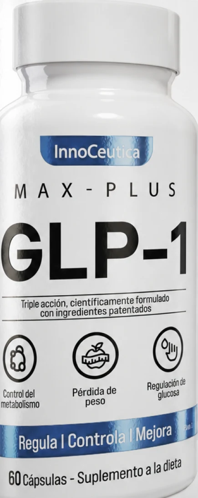

Producto A
MAX-PLUS GLP-1
Regula | Controla | Mejora
Optimiza la salud intestinal y favorece una mejor respuesta metabólica.
- Contenido
- 60 cápsulas
- Porción
- 2 cápsulas
Maximiza la producción natural de GLP-1 para aumentar la saciedad, controlar el apetito y apoyar el equilibrio metabólico.
Declarado en la etiqueta
- Control del metabolismo
- Pérdida de peso
- Regulación de glucosa
Cuándo tomarlo: Con las comidas principales.